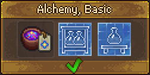
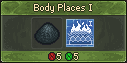
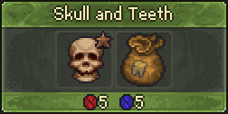

Anatomy and Alchemy
Anatomy and Alchemy is one of the Tech Trees. It focuses on corpses, zombies and graveyard. Its associated Mastery is  .
.
Technologies
| Technology | Prerequisite(s) | Unlocks | ||||||
|---|---|---|---|---|---|---|---|---|

|
Alchemy, Basic | 5 | 5 |
| ||||
 |
| |||||||
 |
Autopsy, Basic | 5 | 5 |
| ||||
 |
Skin and Bones | 5 | 5 |
| ||||
| File:Skin and Bones.png | Soft parts | 5 | 2 |
|


| ||||